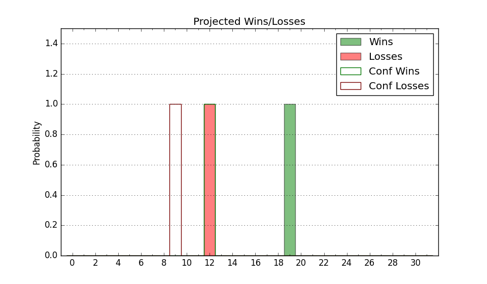

| Home | Game Probabilities | Conferences | Preseason Predictions | Odds Charts | NCAA Tournament |
| City: | Fairfield, Connecticut | |
| Conference: | Metro Atlantic (6th)
| |
| Record: | 12-9 (Conf) 19-12 (Overall) | |
| Ratings: | Comp.: -9.8 (273rd) Net: -9.8 (273rd) Off: 105.4 (242nd) Def: 115.2 (286th) SoR: 0.0 (103rd) |
| Remaining | ||||||
|---|---|---|---|---|---|---|
| Date | Opponent | Win Prob | Pred. | |||
| 3/6 | (N) Saint Peter's (250) | 45.1% | L 70-72 | |||
| Previous | Game Score | |||||
| Date | Opponent | Win Prob | Result | Off | Def | Net |
| 11/3 | @Penn St. (125) | 11.7% | L 68-76 | -9.9 | 13.1 | 3.2 |
| 11/8 | @NJIT (331) | 57.9% | W 74-53 | -11.9 | 34.0 | 22.1 |
| 11/10 | @Seton Hall (56) | 4.1% | L 59-82 | -1.1 | 3.0 | 1.8 |
| 11/14 | Stonehill (327) | 80.6% | W 73-71 | -12.8 | 3.8 | -9.0 |
| 11/16 | Loyola MD (328) | 80.6% | W 85-82 | 1.1 | -10.1 | -9.0 |
| 11/22 | @Le Moyne (302) | 43.9% | W 97-83 | 30.3 | -7.7 | 22.6 |
| 11/26 | Columbia (180) | 44.1% | L 77-106 | -0.8 | -39.8 | -40.5 |
| 11/30 | New Hampshire (343) | 85.9% | W 72-68 | -2.2 | -7.8 | -10.0 |
| 12/5 | @Manhattan (335) | 59.6% | L 66-70 | -23.1 | 15.1 | -8.0 |
| 12/7 | @Merrimack (212) | 24.1% | L 63-74 | -2.9 | -1.4 | -4.3 |
| 12/14 | Monmouth (176) | 43.0% | W 73-65 | 10.8 | 8.2 | 19.0 |
| 12/18 | @Central Connecticut (306) | 45.9% | W 84-70 | 14.5 | 4.9 | 19.4 |
| 12/29 | Saint Peter's (250) | 60.2% | L 66-70 | -10.9 | 1.4 | -9.5 |
| 1/2 | @Canisius (349) | 68.2% | L 81-85 | 10.2 | -28.3 | -18.0 |
| 1/4 | @Niagara (345) | 65.9% | W 83-75 | 27.1 | -17.1 | 10.0 |
| 1/9 | Rider (357) | 91.0% | W 68-62 | -8.6 | -1.3 | -9.9 |
| 1/14 | Manhattan (335) | 83.4% | W 98-62 | 14.5 | 18.0 | 32.5 |
| 1/17 | @Marist (181) | 18.9% | L 67-82 | 7.0 | -16.2 | -9.2 |
| 1/19 | @Siena (208) | 23.5% | L 77-85 | 16.0 | -19.2 | -3.2 |
| 1/22 | Niagara (345) | 86.8% | W 62-61 | -22.3 | 7.0 | -15.2 |
| 1/24 | Canisius (349) | 87.9% | W 61-55 | -13.3 | 8.6 | -4.8 |
| 1/30 | @Iona (257) | 32.7% | W 71-70 | 11.8 | -0.4 | 11.4 |
| 2/1 | Quinnipiac (230) | 56.4% | L 65-72 | -12.7 | 1.7 | -11.0 |
| 2/5 | @Sacred Heart (303) | 44.3% | W 92-87 | 18.1 | -6.9 | 11.1 |
| 2/7 | Marist (181) | 44.2% | W 63-60 | 2.8 | 4.5 | 7.3 |
| 2/15 | @Saint Peter's (250) | 30.8% | L 74-83 | 4.9 | -10.6 | -5.7 |
| 2/20 | Sacred Heart (303) | 73.1% | W 78-68 | -5.6 | 9.8 | 4.2 |
| 2/22 | @Quinnipiac (230) | 27.5% | W 85-79 | 22.3 | -5.9 | 16.5 |
| 2/27 | Siena (208) | 51.1% | W 72-58 | -4.4 | 26.2 | 21.8 |
| 3/1 | Mount St. Mary's (293) | 71.3% | L 47-69 | -37.8 | -1.5 | -39.4 |
| 3/5 | (N) Manhattan (335) | 73.2% | W 71-60 | -14.1 | 19.7 | 5.7 |
| Stats & Trends | |||||
|---|---|---|---|---|---|
| Current | Day | Week | Month | Season | |
| Composite | -9.8 | +0.3 | -0.2 | +0.6 | +4.7 |
| Comp Rank | 273 | -- | -6 | -4 | +39 |
| Net Efficiency | -9.8 | +0.3 | -0.2 | +0.6 | -- |
| Net Rank | 273 | -- | -6 | -3 | -- |
| Off Efficiency | 105.4 | -0.4 | -2.0 | -0.5 | -- |
| Off Rank | 242 | -16 | -46 | -25 | -- |
| Def Efficiency | 115.2 | +0.7 | +1.7 | +1.1 | -- |
| Def Rank | 286 | +7 | +21 | +14 | -- |
| SoS Rank | 356 | -1 | -3 | +4 | -- |
| Exp. Wins | 19.0 | +1.0 | +0.8 | +2.7 | +5.4 |
| Exp. Conf Wins | 12.0 | +1.0 | +0.8 | +2.7 | +2.9 |
| Conf Champ Prob | 0.0 | -- | -- | -- | -4.4 |

| Advanced Stats | ||
|---|---|---|
| Stat | Value | Rank |
| Off Eff FG % | 0.477 | 302 |
| Off Ast Ratio | 0.121 | 334 |
| Off ORB% | 0.323 | 109 |
| Off TO Rate | 0.138 | 118 |
| Off FT Ratio | 0.282 | 338 |
| Def Eff FG % | 0.546 | 283 |
| Def Ast Ratio | 0.159 | 262 |
| Def ORB% | 0.314 | 228 |
| Def TO Rate | 0.136 | 246 |
| Def FT Ratio | 0.327 | 132 |